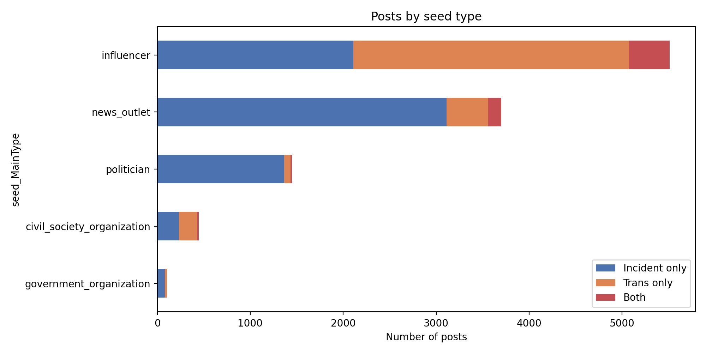
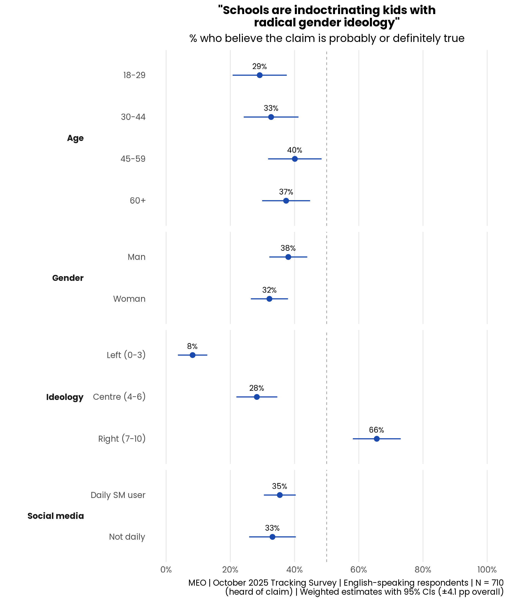
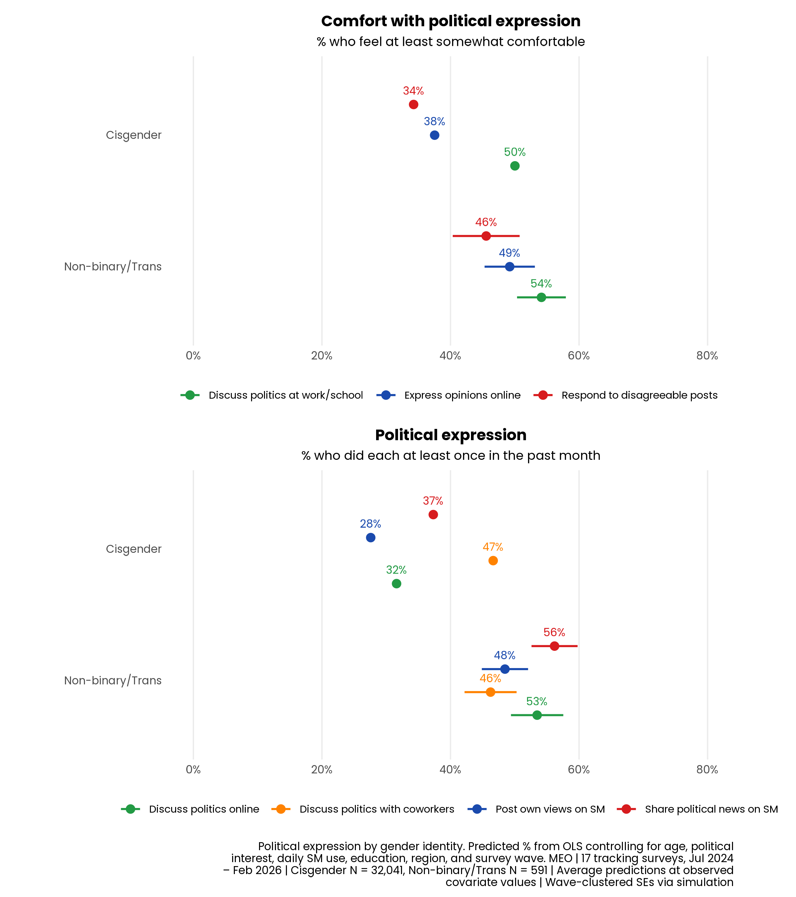

The Tumbler Ridge shooting and anti-trans discourse in the Canadian information ecosystem
Trans panic narratives were significant but a minority of Tumbler Ridge shooting discussions, driven primarily by influencers.
Negative rhetoric dominated engagement with trans-related posts, especially violence association and identity denial.
Canadians are deeply polarized on gender identity along ideological lines. Only 8% of left-leaning vs 66% of right-leaning believe schools indoctrinate with gender ideology.
Trans and non-binary Canadians are not less likely to participate in online political spaces despite a hostile environment.
On February 10, 2026, 18-year-old Jesse Van Rootselaar killed her mother and half-brother at home in Tumbler Ridge, BC, then walked to Tumbler Ridge Secondary School, killing six and wounding 27 before dying by suicide. Canada's deadliest school shooting since 1989.
The next day, RCMP confirmed Van Rootselaar was a trans woman. Within hours:
Tumbler Ridge follows three prior incidents where trans identity was weaponized after mass violence:
1. What was the salience of the trans panic narrative and its source?
2. What was the nature and reach of negative speech about transgenderism?
3. Are Canadians polarized on gender identity, and does it suppress trans participation online?
What share of the discussion mentioned transgenderism, and who was driving it?
Posts about Tumbler Ridge spiked on Feb 11 (UTC). Trans-related discussion increased but remained a minority.
Influencers were the main source. News outlets, politicians, and government organizations rarely linked the incident to transgenderism.

How much engagement did negative rhetoric receive, and what themes dominated?
Using Claude Haiku 4.5, we classified the top 20 posts per day in February 2026 (Canadian seeds, 560 posts).
Ideology framing (28%), conspiracy (19%), child protection (19%). Violence association only 5%.
Violence association to 49%. Conspiracy doubles. Identity denial triples.
The baseline never returned to pre-shooting levels. Feb 18–28 held at 75%.
We searched all 11,211 posts from our seedlist for explicit violent threats, and also examined datasets from previous shootings with notable trans violence discourse.
The 9 explicit threats were all from the Charlie Kirk dataset, where tweets were collected en masse (not just large accounts). A third had been deleted. None had community notes — likely because all had very few or zero likes. Hostility in prominent Canadian accounts is coded and indirect, not overt threats.
Are Canadians polarized on gender identity, and does hostility suppress trans voices?
"Schools are indoctrinating kids with radical gender ideology" — % who believe probably/definitely true
Ideology is the strongest predictor. Age and gender play a more modest role. Social media use does not appear, in itself, to be related.
MEO | October 2025 Tracking Survey | English-speaking respondents | N = 710

Despite the hostile environment, trans and non-binary Canadians report greater comfort and frequency of online political expression.
These differences hold after controlling for age, political interest, SM use, education, region, and survey wave — but do not extend to offline speech.
Consistent with an activated minority framework.
MEO | 17 tracking surveys, Jul 2024 – Feb 2026 | Cisgender N=32,041, Non-binary/Trans N=591

This incident follows a now-recognizable pattern: revelation of a transgender connection, rapid spread of misleading statistics, creation of fraudulent accounts, and misidentification of unrelated individuals.
1. Develop rapid response protocols for the trans panic playbook. The predictability of this cycle means monitoring organizations can prepare fact-checks and counter-narrative resources in advance, ready to deploy during the early, fact-poor window when misinfo spreads fastest.
2. Platforms must improve detection of identity fraud during breaking news. Fraudulent accounts, misidentification of unrelated individuals, and viral debunked statistics create direct safety risks. Newsrooms should adopt stricter verification before publishing identity claims.
3. Invest in understanding how hostile climates affect trans civic participation. Those who remain closeted or have withdrawn from online spaces entirely are not captured in surveys. Online expression may serve as a safer outlet rather than reflecting overall comfort.
A note on AI: Claude (Anthropic) was used for post classification (Haiku 4.5), data visualization, and prose drafting. All code, classifications, and content were reviewed, tested, and verified by the research team. Study design, data collection, and statistical analysis were led by the researchers.